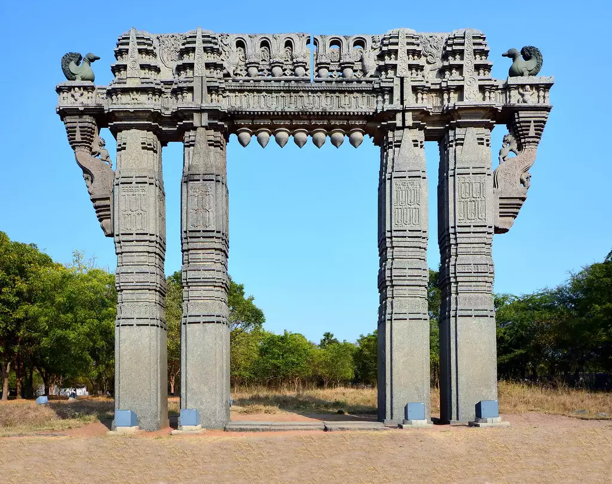
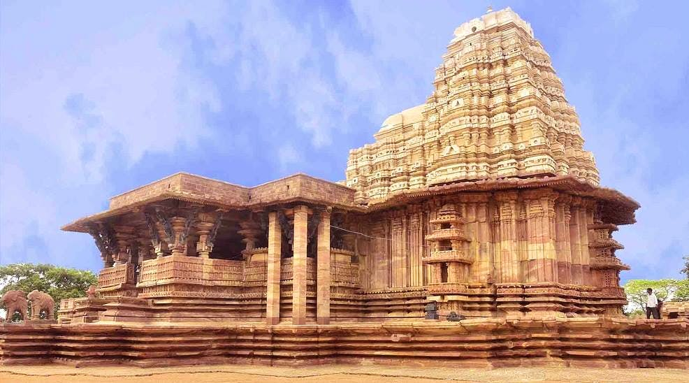
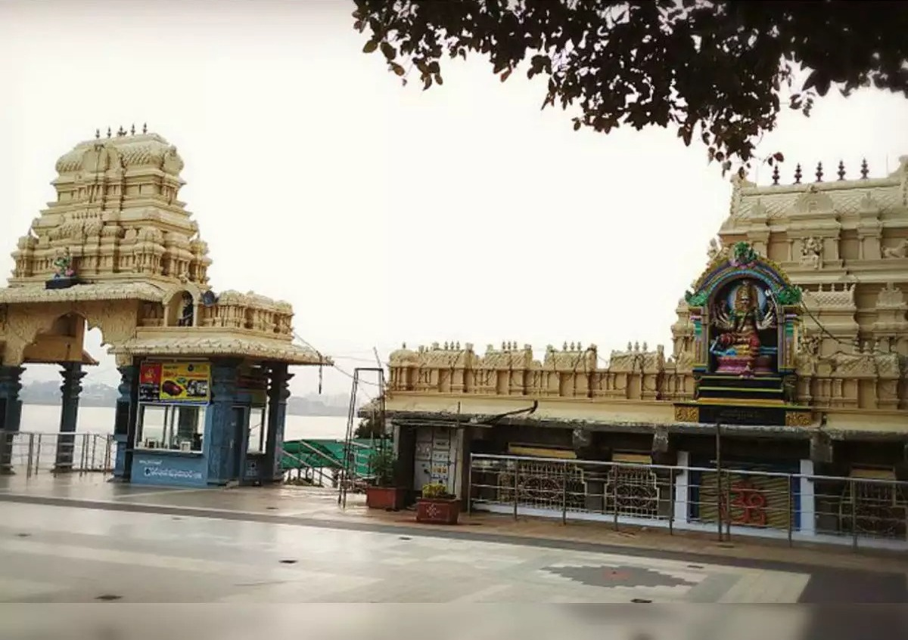
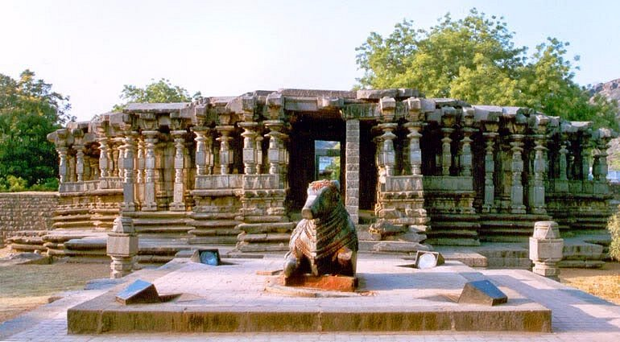
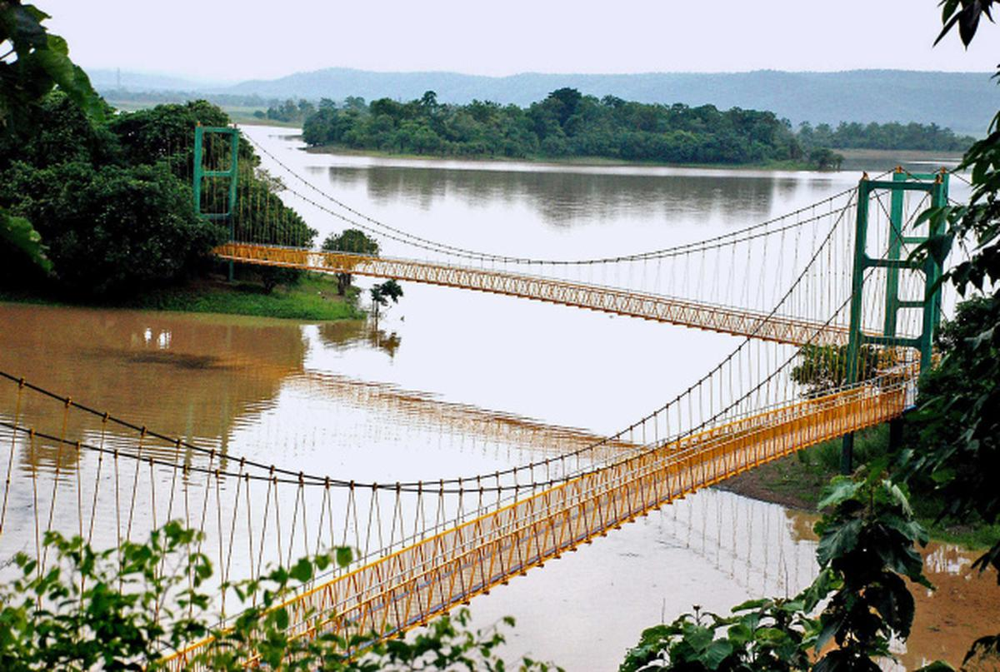

Warangal is recognized as one of the best heritage cities of India. It is 150 km away from the state capital Hyderabad.
It is also the second largest city in the state of Telangana. The city’s name is derived from the Telugu word Orugallu – ‘Oru’ which means one and the word ‘gallu’ meaning stone.
The city was the capital of the great Kakatiya rulers who reigned between 12th and 14th centuries.
According to the history of Warangal, the Prola Raja of great Kakatiya dynasty built the beautiful city in 12th century.
The Kakatiyas, who ruled the place for more than 200 years, have left the succeeding generations, many grand monuments and architectural wonders like the famous Warangal fort, Swayambhu Temple and many other amazing ancient structures.
The Warangal Fort, which is the main attraction of the city is spread over a radius of 19 kilometers between Warangal and Hanamkonda. The fort was constructed in the 13th century in the reign of the Kakateya King Ganapati Deva.
The Warangal fort is most famous for its graceful and finitely carved arches and pillars. This fort has four large stone gateways.
Click here for the location.

Ramappa Temple, also known as the Rudreswara temple, is a Kakatiya style Hindu temple dedicated to the Hindu god Shiva, located in Telangana, India.
It is 15 km (9.3 mi) from Mulugu, 66 km (41 mi) from Warangal, 209 km (130 mi) from Hyderabad.
An inscription in the temple says it was constructed in the year 1213 CE by Recherla Rudra—a general of Kakatiya ruler Ganapati Deva (r. 1199–1262).
Located in the vicinity of Ramappa Lake, the Ramappa Temple complex which consist of three temples was constructed between 1212 and 1234, designed and architect by Ramappa—after whom the temple complex is named.
Marco Polo, during his visit to the Kakatiya empire, supposedly called the temple "the brightest star in the galaxy of temples".
In July 2021, Ramappa Temple was declared as a UNESCO World Heritage Site.
Click here for the location.

Bhadrakali Temple is one of the oldest temples for Goddess Bhadrakali, situated on a hilltop between the two cities of Hanamkonda and Warangal, Telangana, India.
The temple is believed to be built in 625 A.D by the King Pulakeshin II of Chalukya dynasty to commemorate his victory over Vengi region of Andhra Desham, as per the writings on the temple wall.
Kakatiya kings later have adopted the temple and considered Goddess Bhadrakali as their kuladevata. A lake was also built by Ganapati-deva adjacent to the temple. Due to the fall of Kakatiya dynasty to the Muslim rulers of Delhi, the temple lost its prominence. The Kakatiyas negotiated a truce with Allauddin Khilji by offering the diamond in exchange not to be invaded. He sent his slave and personal confidant Malik Kufur to personally transport the diamond. In 1950, the temple was renovated by Sri Ganesh Rao Sastri a devi upasaka along with Gujrati businessman Shri Maganlal.
The exceptional feature of the temple is the 2.7 x 2.7 m2 stone image of Goddess Bhadrakali with fierce looking eyes, and eight arms each carrying various weapons.
Goddess Bhadrakali's vahana – Lion is placed opposite to the sanctum sanctorum.
Click here for the location.

The most popular place to visit in Warangal is the Thousand Pillars Temple, located at the base of Hanamkonda hill
It was built in 12th century by the Kakatiya King Rudra Deva. Dedicated primarily to Lord Shiva, this temple is also known by the name of Sri Rudreshwara Swamy Temple.
At this temple, three deities- Lord Shiva, Lord Vishnu and Lord Surya are worshipped. They are known as Trikutalayam.
There are three shrines, one for each deity.
Currently under the maintenance of Archaeological Survey of India, Thousand Pillar Temple is known for intricately carved pillars.
A massive sculpture of Nandi, carved out of a single rock, is another attraction of this temple.
Rock cut elephants and exquisite engravings at the temple are also worth noticing.
Click here for the location.

Lakhnavaram Lake, located in Govindaraopet Mandal about 70 kilometers away from Warangal, is a trending picnic spot. The lake is an exceptional thing of beauty. The lake was formed by closing down three narrow valleys. Each valley is replaced with a short bund, and hills act as their natural barrier. The lake has been constructed by the rulers of the Kakatiya dynasty in 13th Century A.D. An added advantage is that the lake takes shelter in isolated surroundings and this makes your holiday very private.
The entire region seems bountiful with green crops and pleasant water resources. The Lakhnavaram Lake which hides itself amidst the hills was discovered during the Kakatiya reign and the rulers expanded it to grow as a source of irrigation. An added attraction to this mystic beauty is the suspension bridge. The hanging bridge takes you to the mini island in the lake. The authorities maintaining the lake also provide boat riding facility which will take you close to the most serene part of the lake.
Click here for the location.